| 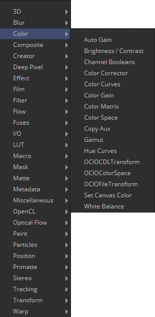 | 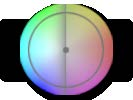 | 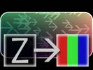 |
| 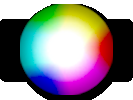 | 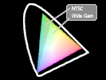 | |
| 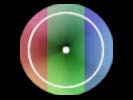 | 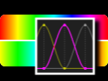 | |
| 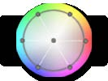 | 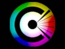 | |
| 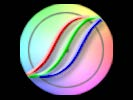 | 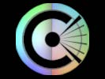 | |
| 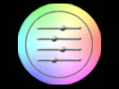 | ||
| 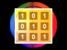 | 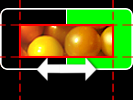 | |
| 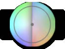 | 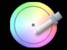 |
Auto Gain工具用于自动调整图像的颜色范围，以便将最暗和最亮的像素设置为用户选择的值。默认情况下，图像中最暗的像素被向下推到黑色，最亮的像素被推到白色，其间的所有像素都被拉伸以均匀地覆盖颜色范围。 这在补偿光照变化、处理低对比度图像或可视化浮点动图像的全色范围时非常有用（尽管监视器的View Normalized Image按钮通常更适合此）。
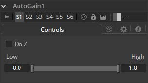
注意： 输入图像随时间的变化可能会导致结果的级别相应变化。例如，如果一个明亮的物体移出一个黑暗的镜头，剩下的场景会突然变亮，因为剩下的较暗的值被拉伸为白色。这也适用于应用Do Z时的突然深度变化; 当近或远物体进入或离开场景时，可以向前或向后推动现有物体。
选择Do Z复选框以将自动增益效果应用于Z通道。这对于将一个Z通道的范围与另一个Z通道匹配或在RGB值中查看浮动Z通道非常有用。
此Range控件用于设置图像中的最低和最高可能像素值。图像中的所有颜色值都会重新调整以适合此范围。
示例
- 使用Background工具创建水平渐变。将一种颜色设置为深灰色（RGB值0.2）。将另一种颜色设置为浅灰色（RGB值0.8）。
- 添加Auto Gain工具并将Low值设置为0.0，将High设置为0.5。这将使最亮的像素向下推到0.5，最暗的像素将被推到黑色。剩余的像素值将在该上下限间缩放。
Brightness Contrast工具用于调整图像的增益（Gain），亮度（Brightness），对比度（Contrast），伽马（Gamma）和饱和度（Saturation）。控件的顺序表示每个操作的应用顺序（例如，在对比度之前但在增益之后应用伽马）。使用Forward和Reverse按钮，亮度对比度也是可逆的。因此，颜色校正应用后可以在下游进一步逆转。 为使其工作得最好，请确保以32位浮点处理图像。
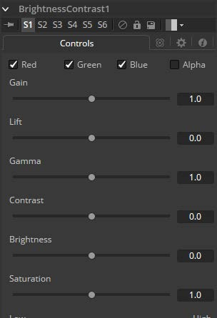 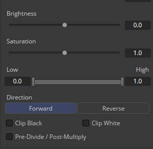
滤镜默认在R、G、B和A通道上运行。通过单击每个通道旁边的复选框可以使它们处于活动或非活动状态，从而实现选择性通道过滤。 这与在常用控件下找到的RGBA复选框不同。该工具在处理之前会考虑这些控件。取消选择通道将导致工具在处理时跳过该通道，从而加快效果的渲染速度。 相反，Common Controls选项卡下的通道控件将在工具处理后应用。
像素值乘以该控件的值。Gain为1.2将使
R0.5 G0.5 B0.4
的像素成为
R0.6 G0.6，B0.48
（即
0.4 * 1.2 = 0.48
）。Gain会影响较高的值而不是影响较低的值，因此效果将在图像的中间范围和顶部范围内最强。
高于1.0的值将提高Gamma（中间灰色），而较低的值将降低Gamma。此工具的效果不是线性的，现有的黑色或白色级别根本不会受到影响。纯灰色的颜色会受到最大影响。
高于1.0的值将提高Gamma（中间灰色），而较低的值将降低Gamma。此工具的效果不是线性的，现有的黑色或白色级别根本不会受到影响。纯灰色受影响最大。
Contrast是明暗区域之间的差异范围。增加此滑块的值将增加对比度，将颜色从中间区域推向黑色和白色。降低对比度将导致图像中的颜色向中间范围移动，从而减少图像中最暗和最亮像素之间的差异。
Brightness滑块的值将添加到图像中每个像素的值。此控件对图像的影响是线性的，因此无论值如何，效果都将一致地应用于所有像素。
此控件用于增加或减少图像中的饱和度。饱和度为0即没有颜色。所有颜色均为灰度。
该范围控件在某些方面类似于Gain控件。如果Low固定在0.0并且High值从1.0减小，则效果与增加增益相同。High值乘以High值的倒数。（即，如果High值是0.75，则每个像素将乘以
1 / 0.75
或1.3333）。
将High值固定在1.0并增加Low值与反转图像颜色和增加增益并将其反转再次完全相同。这会将更多的图像推向黑色，而不会影响白色。
Forward正常应用所有值。而Reverse将有效地反转所有值。
Clip Black和Clip White复选框用于剪切在浮点颜色深度处理时可能出现在图像中的范围外颜色值。超出范围的颜色为低于黑色
(0.0)
或高于白色
(1.0)
。这些复选框对用8位或16位处理每个通道的图像没有影响，因为这样的图像不能超出范围值。
选择Pre-Divide/Post-Multiply复选框将使图像像素值除以颜色校正之前的alpha值，然后在校正后重新乘以alpha值。这有助于防止创建非法加性图像，特别是蓝/绿键的边缘或在使用3D渲染对象时。
Channel Booleans工具可用于对图像中的通道应用各种数学和逻辑运算。此工具通过使用一个图像的通道来修改另一个图像的通道。如果前景输入不可用，则选择使用前景颜色通道的选项将最终使用背景输入的颜色通道。
在Color Channels选项卡上，工具控件按以下方式划分：
位于左侧的是用于通过Channel Booleans（背景输入）传输图像的目标通道。下拉菜单可让您选择是否要使用自己的通道（列表名称后面的后缀BG）修改BG图像，或者使用另一个图像中的通道进行修改，这些通道必须通过管道传输到Channel Booleans节点上的前景输入（ 下拉列表中的后缀FG）。
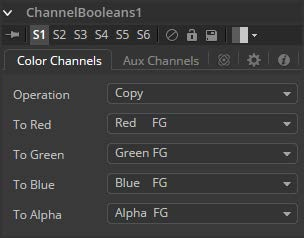
此下拉框用于选择应用于所选通道的数学方法。其设置如下：
这些菜单表示输出图像的四个颜色通道。使用下拉菜单选择源图像中的哪个通道将用于生成输出通道。 默认设置只是复制前景通道中的通道。选择四个颜色通道中的任何一个，以及Z缓冲区，饱和度，亮度和色相等几个辅助通道。
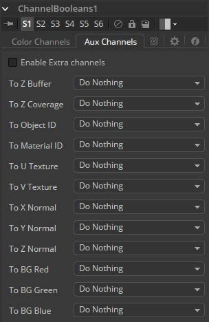 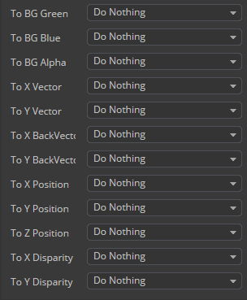
这有几个辅助通道。使用这些菜单选择输出图像的辅助通道源。有关辅助通道的更多详细信息，请参阅有关3D Tools的章节。
选中Enable Extra Channels复选框后，Channel Boolean工具将能够输出超出常规RGBA的通道的图像。此选项卡中的其余控件将变为活动状态，可用于将数据复制到辅助通道中。
例子： 要将一个图像的Alpha通道复制到自己的颜色通道，请将Red、Green和Blue通道设置为Alpha BG。将操作设置为复制。要从另一个图像复制Alpha通道，请将操作类型设置为Alpha FG。
要用另一个图像的Alpha替换图像的现有Alpha通道，请将To Red、To Green和To Blue选择为"Do Nothing"，To Alpha选择为"Alpha FG"。将包含Alpha的图像传输到Channel Booleans节点上的Foreground输入。设置操作："Copy"。也可以使用Matte Control工具执行相同的操作。
要将任何类型的遮罩组合进图像的Alpha，将To Red、To Green和To Blue选择Do Nothing，为To Alpha选择Matte。连接遮罩到Channel Booleans节点上的Foreground输入。设置操作："Copy"。
要从蓝色通道中减去红色通道的另一个图像的像素，请将To Red和To Green选择"Do Nothing"，为ToBlue选择"Red FG"。连接包含红色通道的图像，以减去Channel Booleans节点上的Foreground输入。设置操作："Subtract"。
Color Corrector工具是一款综合的色彩工具，具有直方图、匹配和均衡，色调偏移、着色和颜色抑制功能。Color Corrector有两个图像输入。将要校正的图像连接到主输入。辅助输入可用作直方图匹配的参考。
Color Corrector工具中的控件分为四个单独的类别：颜色（Colors）、色阶（Levels）、直方图（Histogram）和颜色抑制（Suppress）。从Correction选项卡顶部的阵列中选择一个类别按钮将导致显示该类别的控件。下面详细描述了每个类别。
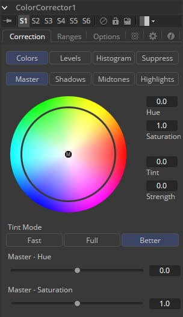 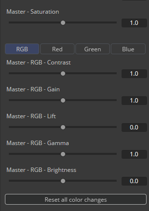
此组按钮确定此选项卡中受控件影响的颜色范围。比如，选择Shadows范围时，所做的任何颜色调整都只会影响图像的较暗像素。
在Color Corrector工具的Colors，Levels和Suppress部分中，将保持此按钮的选定状态。
在对Highlight，Midtone和Shadow范围进行任何更改后，对Master通道中的图像进行的调整将应用于图像。
注意： 控件对于每种颜色范围都是独立的。例如，在Shadows模式下调整Gamma控制不会改变或影响Highlights模式的Gamma控制值。每个控件都是独立的并单独应用。
Color Wheel显示提供了对Hue和Saturation进行调整的直观表示，以及应用于图像的任何着色。可以直接在显示屏上进行调整，也可以在Color Wheel右侧的文本框中输入值。
Hue控件提供了一种通过色谱移动图像的Hue（或所选颜色范围）的方法。控制值的有效范围在0.0和1.0之间，表示顺时针方向的旋转角度。值0.25将是90度（90/360）并且具有将红色变为蓝色，绿色变为红色等的效果。
色相偏移的程度可以直接输入文本控件，或者将鼠标放在颜色控件的外环上方并向上或向下拖动鼠标。与控件中心显示的原始颜色相比，外圈将始终显示偏移的颜色。
Saturation控件用于调整颜色值的强度。Saturation为0产生没有任何色度或颜色分量的灰色像素，而值为1.0产生输入图像的色度分量没有变化。较高的值将产生具有高颜色分量的过饱和值。
Saturation值可以直接输入文本控件，也可以通过在色轮控件的外环上向左和向右拖动鼠标来输入。
Tint控件用于着色图像或选定的颜色范围。此控件中的值从0到1.0，表示色轮上的色泽颜色的角度。值25表示90度，色轮上的绿色和黄色之间的中间位置。
Strength 控件确定对所选颜色范围应用的色泽量。
色泽在Color Wheel控件中由小圆圈表示，小圆圈显示色调的颜色和强度。Highlight Ranges标记是圆形的黑色轮廓。Midtones和Shadows由灰色圆圈表示。Master Tint Marker也是黑色的，但它的中心有一个白色M，以区别于其他。
只有在选择了适当的范围时，鼠标才能为每个范围定位标记。例如，选择Master范围时，无法移动Highlight Marker。
拖动此控件时按住Command或Ctrl键可以通过降低控件对鼠标移动的敏感度来进行更精细的调整。按住Shift键将限制标记移动到单个轴，允许您将效果限制为色泽或强度。
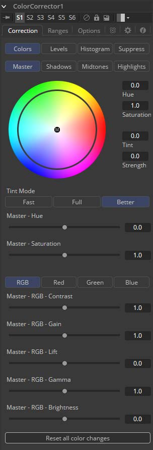
这三个按钮用于选择用于应用色泽、色相和饱和度调整的算法的速度和质量。默认值为Better，但是对于处理较大的图像，可能需要使用Fast方法。
此滑块是上面Color Wheel中显示的Hue控件的克隆。使用鼠标可以更轻松地对值进行小幅调整。
此滑块是上面Color Wheel中显示的Saturation控件的克隆。使用鼠标可以更轻松地对值进行小幅调整。
这些按钮与Color Corrector工具的Histogram、Color和Levels部分中显示的按钮相同。选择Red通道时，此选项卡中的控件将仅影响Red通道，依此类推。
控件是独立的，因此切换到Blue不会删除或消除对Red、Green或Master所做的任何更改。对每个通道进行的动画和调整是分开的。这些按钮只是确定要显示的控件。
Contrast是明暗区域之间的差异范围。增加此滑块的值将增加对比度，将颜色从中间区域推向黑色和白色。降低对比度将导致图像中的颜色向中间范围移动，从而减少图像中最暗和最亮像素之间的差异。
像素值乘以该控件的值。Gain为1.2将使
R0.5 G0.5 B0.4
的像素成为
R0.6 G0.6，B0.48
（即
0.4 * 1.2 = 0.48
）。增益会影响较高的值而不是影响较低的值，因此效果在图像的中间范围和顶部范围内最强。
虽然Gain基本上会缩放黑色周围的颜色值，但Lift会将颜色值围绕白色进行缩放。像素值乘以该控件的值。Lift为0.5将使
R0.0 G0.0 B0.0
的像素成为
R0.5 G0.5 B0.5
，同时使白色像素完全不受影响。提升对较低值的影响大于影响较高值的值，因此在图像的中间范围和低范围内效果最强。
高于1.0的值将提高Gamma（中间灰色），而较低的值将降低Gamma。此工具的效果不是线性的，现有的黑色或白色级别根本不会受到影响。纯灰色受影响最大。
Brightness滑块的值将添加到图像中每个像素的值。此控件对图像的影响是线性的，因此无论值如何，效果都将一致地应用于所有像素。
选择此按钮将使此部分中的所有颜色控件返回其默认值。
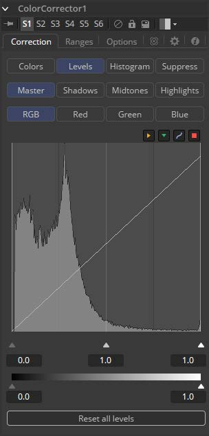
此数组在上面的Colors模式中描述。
直方图是表示场景中颜色值分布的图表。从左到右读此图表：最左边的值表示场景中最暗的颜色，最右边的值表示最亮的颜色。具有相同或相似值的图像中的像素越多，图表的该部分就越高。
每个通道计算亮度，因此，Red、Green和Blue通道都有自己的直方图，其组合结果组成了Master Histogram。
要垂直缩放直方图，请将鼠标指针放在控件内，然后向上拖动指针以放大或缩小或向下以缩小。
这些按钮用于选择和显示每个颜色通道或主通道的直方图。
Display Selector Toolbar提供了启用和禁用直方图显示组件的方法。将鼠标指针悬停在按钮上以显示描述按钮功能的工具提示。
这将启用或禁用输入图像直方图的显示。
这将启用或禁用Reference图像直方图的显示。
这启用或禁用来自后期颜色校正图像的直方图的显示。
这会切换样条曲线的显示，该样条曲线用于准确显示使用参考图像应用的自动颜色校正如何影响图像。当均衡输入图像和参考图像之间的亮度时，这可能很有用。
这些控件用于调整输入图像的直方图、压缩或移动所选颜色通道的范围。
可以通过将直方图显示下方的三角形向左和向右拖动来调整控件。
向左移动高值（减小该值）将使直方图倾斜为白色，将图像分布向白色移动。低值将在相反方向上具有类似的效果，将图像分布推向黑色。
Threshold控件可以对图像应用剪切、压缩直方图。降低High控件的级别将降低图像中像素的值，将白色像素向下滑向灰色，灰色像素向黑色滑动。
将Low控件调高至High将执行相反的操作，将最暗的像素向白色滑动。
如果低值设置为0.1，则值为0.0的像素将设置为0.1，而所有其他值将增加以适应更改。可视化效果的最佳方法是观察上面显示的输出直方图的变化。
单击此按钮会将色阶部分中的所有控件重置为其默认值。
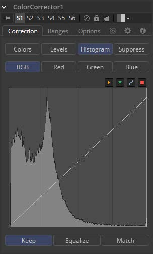
在浮点图像上使用直方图匹配或均衡方法，输出图像的颜色深度将转换为16位整数。二维直方图不适合处理极端动态范围的浮点图像，因此这些操作将始终恢复为16位整数处理。
Histogram Control在本工具文档的前面详细描述，Levels Mode的标题之下。
这些按钮中的每一个都能够进行不同类型的色彩校正操作。
Keep 保持： Keep不会对图像产生任何变化，并忽略参考直方图。
Equalize 均衡： 选择Equalize可调整源图像，使图像中的所有颜色值均匀表示，实质上是平直直方图，使图像中的颜色分布更加均匀。
Match 匹配： Match模式基于参考图像中的直方图修改源图像。它用于匹配具有不同光照条件和曝光的两个镜头，使它们看起来相似。
选中后，Equalize和Match模式将显示以下控件。
此滑块会影响Color Corrector工具根据其亮度分布尝试影响图像的程度。当此控件为零（默认值）时，匹配和均衡将独立应用于每个颜色通道，并且Luminance或三个颜色通道的组合值不受影响。
如果在均衡图像时此控件具有正值，则在应用任何颜色均衡之前，输入图像的亮度分布将变平。
如果当校正模式设置为匹配时该控制具有正值，则在对R，G和B通道应用任何校正之前，输入的亮度值与参考匹配。
L值和RGB控件可以具有累积效果，并且通常它们不会同时设置为满（1.0）。
选中此复选框后，颜色匹配将同等地应用于所有颜色通道。如果未选中该复选框，则会显示每个频道的各个控件。
此控件的名称会根据是否已选择Equalize或Match模式而更改。滑块可用于减少应用于图像的校正量以使其均衡或匹配。值为
1.0
会导致均衡或匹配的完全效果，而较低的值会调整结果。
此组按钮确定采样图像以生成直方图时使用的颜色保真度级别。10-Bit产生比8-Bit更高的保真度，而16-Bit产生比10-Bit更高的保真度。
通常，颜色均衡和匹配操作将在图像中引入色调分离（Posterization），这是因为图像中的梯度已被扩展或压缩，使得颜色之间的动态范围不足以显示平滑过渡。此控件可用于平滑校正曲线，将一些原始直方图混合回结果，以实现更均匀的过渡。
单击此按钮可冻结当前参考直方图，将其当前状态存储为内存中的快照。如果参考直方图不是快照，则参考直方图在帧与帧之间更新。当工具试图将变化的源与变化的参考匹配时，这可能导致校正的闪烁和定相。
单击此按钮以释放直方图的当前快照并返回使用实时参考输入。
选择此按钮将删除对直方图所做的所有更改，将控件恢复为默认值并将模式设置为Keep。
色彩抑制（Color Suppression）提供了一种从图像中去除不需要的颜色成分的机制。色轮控件类似于工具的颜色部分中显示的控件，但是这个控件由六个控件包围，每个控件代表色轮的特定颜色。
要抑制所选范围内的颜色，请将表示该颜色的控件拖向色轮的中心。控制越接近中心，颜色将从图像中抑制得越多。
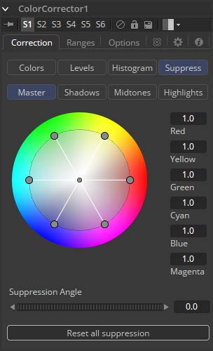
使用该Suppression Angle控件旋转抑制轮上的控件并将特定颜色置零。
单击此控件可将抑制颜色重置为默认值
1.0
。
Ranges选项卡包含用于指定图像中哪些像素被视为阴影以及哪些像素被视为高光的控件。中间值始终计算为阴影或高光中尚未包含的任何像素。
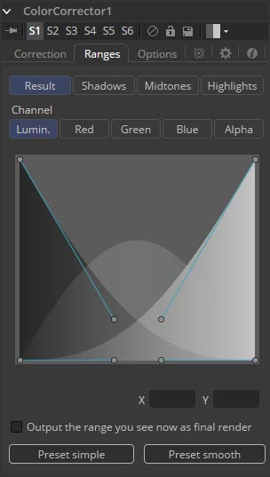
这些按钮用于选择查看器中显示的颜色范围。它们有助于将包含在范围内的实际像素可视化。选择Result按钮时，视图中Color Corrector显示的图像将是颜色校正图像的图像。这是默认值。
选择其他按钮之一会将显示切换为灰度图像，显示哪些像素是所选范围的一部分。白色像素表示被认为是该范围的一部分的像素，并且黑色像素不包括在该范围内。例如，选择Shadows会将被视为阴影的像素显示为白色，将不是阴影的像素显示为黑色。中灰色像素仅部分在该范围内，并且不会获得对该范围的任何颜色调整的完全效果。
通过操纵样条曲线控制柄来选择范围的范围。有四个样条点，每个样条点都有一个Bezier手柄。顶部的两个手柄代表hadow和高光范围的开始，而底部的两个手柄代表范围的结束。Bezier手柄用于控制衰减。
中间调范围没有特定的控制，因为它的范围被理解为阴影和高光范围之间的空间。
样条显示下方的X和Y文本控件可用于输入所选贝塞尔曲线点或手柄的精确位置。
此选项卡中显示的Channel选择按钮可用于检查特定颜色通道的范围。默认情况下，Fusion会在检查颜色范围时显示亮度通道。
选中此复选框将导致监视器中显示的范围的单色显示输出为最终渲染。通常，颜色工具将输出完整的RGBA图像，即使工具留在显示视图中的一个颜色范围。此控件可以使用Color Corrector工具生成范围的遮罩，以用作其他工具中的效果遮罩。
这两个按钮可用于将样条曲线范围返回到Smooth（默认）或Simple（线性）设置。
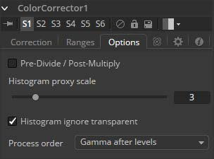
选择此选项将在应用颜色校正之前将颜色通道除以alpha的值。在颜色校正之后，颜色值被alpha重新乘以以产生适当的加性图像。这在执行添加剂合并或处理针对黑色生成的CG图像时至关重要。
Histogram Proxy Scale确定创建和计算直方图时使用的精度级别。较低的值表示较高的精度，较高的值表示较粗糙、泛化的直方图。
此菜单用于选择是否在对图像级别进行任何更改之前或之后应用对图像的伽玛的调整。
Color Curves工具是一种基于样条曲线的工具，用于执行查找表（LUT）颜色操作。每个颜色通道都有提供单独的样条。效果可以是动画的或溶解的，并且可以使用RGB、YUV、YIQ、CMY或HLS颜色空间应用于图像。
可以使用数字键盘上的
+
和
-
键缩放色彩校正器中的LUT视图。 颜色曲线LUT完全支持超出范围的值，颜色值大于1.0或小于0.0的像素。
如果在调整控件时需要更高的精度，也可以从样条曲线编辑器中获得此LUT视图中显示的样条曲线。
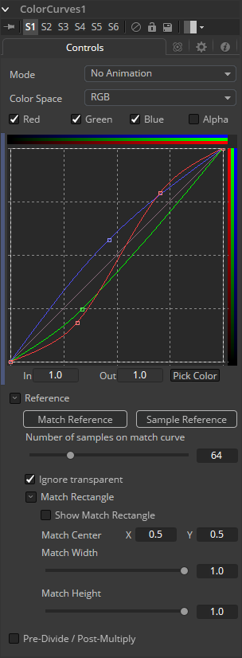
Mode选项可以在Animated和Dissolve模式之间切换。默认模式是静态的，也就是说对曲线的调整是静态的。设置模式为每个通道提供了更改样条，允许颜色曲线随时间变化。
溶解模式基本上是过时的，仅出于兼容性原因而包含在内。
LUT视图中的样条线可以表示来自各种颜色空间的颜色通道。默认为Red、Green和Blue。此菜单中的选项允许选择备用颜色空间。有关此处可用颜色空间的详细说明，请参阅Color Space工具的在线参考文档。
使用Color Channel控件选择当前激活的通道的样条曲线以进行编辑。这些控件的标签将更改以反映当前颜色空间的通道名称。通常它们会显示为Red、Green和Blue。如果Color Curves工具在YUV颜色空间中运算，则它们将显示为Y、U和V.
这些控件不会限制工具对特定通道的影响。 它们仅选择该通道的样条曲线是否可编辑。 这些控件通常用于确保在一个通道的样条曲线上添加或移动点不会无意中影响不同通道的样条曲线。
Spline Window显示每个RGBA通道的样条线。这些可以单独编辑或作为一组编辑，具体取决于上面选择的色彩通道。
样条曲线默认为线性范围，从左下角的
0 in，0 out
到右上角的
1 in，1 out
。 在默认情况下，颜色将处理与输出相同的值。如果一个点在中间加
0.5 in 0.5 out
，并且该点向上移动，这将使图像的中间颜色更亮。
样条曲线允许精确控制颜色范围，因此可以在不影响其他颜色值的情况下进行特定调整。
使用In和Out控件可以处理所选点的精确值。要更改值，请选择一个点并输入所需的入/出值。
单击Pick按钮并从显示中的图像中选择一种颜色，以自动在样条曲线上为所选颜色设置关键点。新点将绘制为三角形，并且只能垂直移动（如果点被锁定，则只有Out值可以更改）。
点仅添加到启用的样条线。要仅在特定通道上添加点，请在进行选择之前禁用其他通道。
该技巧的一个用途是白平衡图像。使用Pick控件从图像中选择应为纯灰色的像素。调整出现的点，使Out值为0.5，将像素颜色更改为灰色。
使用上下文菜单的Locked Pick Points选项可以解锁使用Pick选项创建的点，将它们转换为普通点。
单击Match Reference按钮将自动设置曲线上的点，以匹配Color Curves工具的第二个（reference，参考）输入中提供的图像。
单击Sample Reference按钮将对背景图像的中心扫描线进行采样，并创建其颜色值的LUT。
此滑块确定用于将曲线与参考图像中的范围匹配的点数。
选中此复选框将使图像的像素值除以颜色校正之前的alpha值，然后在校正后重新乘以alpha值。这有助于避免创建非法加性图像，尤其是在蓝/绿键的边缘或使用3D渲染对象时。
Color Gain工具包含用于调整图像的增益、伽马、饱和度和色相的选项。Color Gain工具提供的许多控件也可以在Color Corrector工具中找到，但这个更简单的工具可以更快地渲染。区分Color Gain工具和Color Corrector的一个功能是其平衡控制。这些可用于调整高、中、低的颜色色泽。
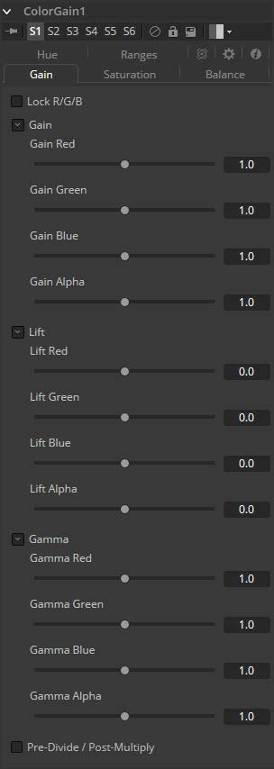
选择后，每个效果的红色，绿色和蓝色通道控件将合并为一个滑块。 Alpha通道效果保持独立。
Gain RGBA控制以线性方式乘以图像通道的值。所有像素都乘以相同的因子，但效果在明亮像素上会更大，在黑暗时会更小。黑色像素不会改变（
x * 0=0
）。
虽然Gain基本上会缩放黑色周围的颜色值，但Lift会将颜色值围绕白色进行缩放。 像素值乘以该控件的值。0.5的Lift将使
R0.0 G0.0 B0.0
的像素成为
R0.5 G0.5，B0.5
，同时使白色像素完全不受影响。Lift对较低值的影响大于影响较高值的值，因此在图像的中间范围和低范围内效果最强。
Gamma RGBA控件会影响图像中间范围的亮度。该工具的效果是非线性的。 修改gamma时，图像中的白色和黑色像素不受影响，而纯灰色受此参数更改的影响最大。此控件的较大值更改将倾向于将中间像素推入黑色或白色，具体取决于所使用的值。
选中此复选框将使图像的像素值除以颜色校正之前的alpha值，然后在校正后重新乘以alpha值。这有助于避免创建非法加性图像，尤其是在蓝/绿键的边缘或使用3D渲染对象时。
此设置控制图像通道中颜色的强度。值0.0将剥离图像通道中的所有颜色。大于1的值将强化场景中的颜色，将它们推向基础色。
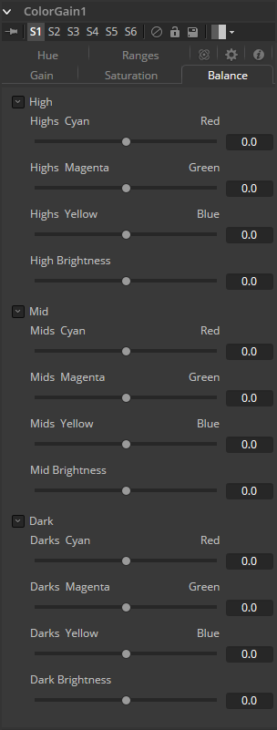
Color Gain工具的这一部分提供了用于调整颜色通道整体平衡的控件。 为图像的高，中和暗范围提供独立的颜色和亮度控制。
颜色被分组为来自两个主色空间的相对对。 可以将红色值推向青色，将绿色值推向洋红色，将蓝色推向黄色。可以为每个通道提高或降低亮度。
默认情况下，可以将平衡滑块调整为-1到+1，但可以手动输入此范围之外的值以增加效果。 任何滑块的值为0.0表示图像通道没有变化。 正值和负值表示图像通道的平衡已被推向一对中的一种颜色或另一种颜色。
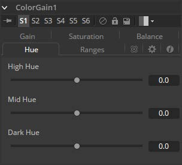
使用Color Gain工具的Hue部分可以移动图像的整体色调，而不会影响亮度或饱和度。三个滑块提供对高、中、暗范围的独立控制。
以下是RGB颜色空间中的色相顺序：红色、黄色、绿色、青色、蓝色、洋红色和红色。高于0的值会将图像的色相向右推（红色变为黄色）。低于0的值将色相向左推（红色变为品红色）。在-1.0或1.0时，色相完成循环并返回其原始值。色相滑块的默认范围是-1.0到+1.0。可以手动输入此范围之外的值。
Ranges标签页包含用于指定图像中哪些像素被视为阴影以及哪些像素被视为高光的控件。中间值始终计算为阴影或高光中尚未包含的任何像素。
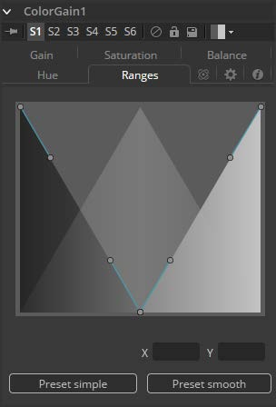
通过操纵样条曲线控制柄来选择范围的范围。有四个样条点，每个样条点都有一个贝塞尔手柄。顶部的两个手柄代表阴影和高光范围的开始，而底部的两个手柄代表范围的结束。贝塞尔手柄用于控制衰减。
中间调范围没有特定的控制，因为它的范围被理解为阴影和高光范围之间的空间。样条显示下方的X和Y文本控件可用于输入所选贝塞尔曲线点或手柄的精确位置。
这两个按钮可用于将样条曲线范围返回到平滑（默认）或简单（线性）设置。
ColorMatrix允许大量操作来单独修改不同颜色通道的值。
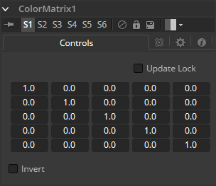
选择此控件后，Fusion将不会渲染该工具。这有助于先设置工具的每个值，再关闭Update Lock以进行渲染。
这定义了实际发生的操作类型。水平行定义工具的输出值，垂直列定义输入值。“添加”列允许简单地将值添加到各个颜色通道。默认情况下，输出值与输入值相同。
我们也可以以数学公式的形式写出默认设置。
[R out] = 1 * [R in] + 0 * [G in] + 0 * [B in] + 0 * [A in] + 0[G out] = 0 * [R in] + 1 * [G in] + 0 * [B in] + 0 * [A in] + 0[B out] = 0 * [R in] + 0 * [G in] + 1 * [B in] + 0 * [A in] + 0[A out] = 0 * [R in] + 0 * [G in] + 0 * [B in] + 1 * [A in] + 0启用此选项将转置Matrix。考虑到交换通道、使用不同的工具进行其他操作，然后复制并粘贴原始ColorMatrix并将其设置为Invert以使您的通道恢复原始状态。
如果我们想要对颜色值进行简单的反转或反转，但保持我们的Alpha通道不变，矩阵将如下所示。
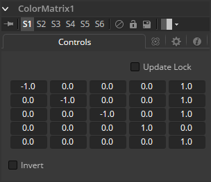
观察到我们必须向每个通道加上1以将反转值变回正数。
让我们一步一步地跟随示例看一下32位灰度梯度的波形。
01： 原始灰度。
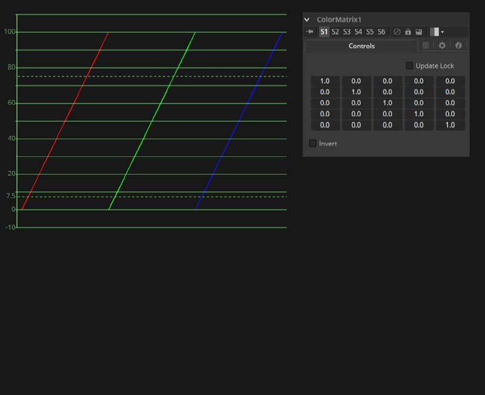
02： RGB设置为-1。值反转但低于0。
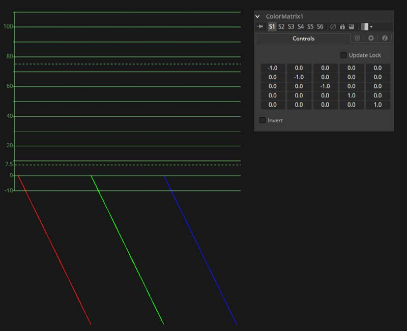
03： 向每个通道加上1来保持反转，但会将值移回正范围。
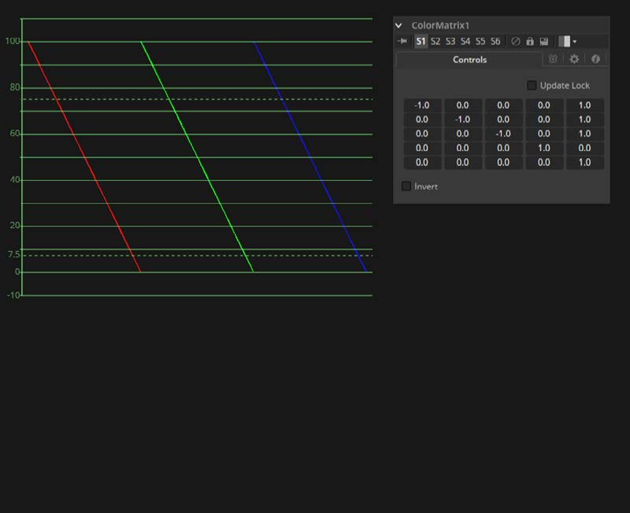
让我们分别影响每个通道的亮度。这将从Red通道中减去0.2，向Green通道加上0.314并向Blue通道加上0.75，同时保持Alpha不变。
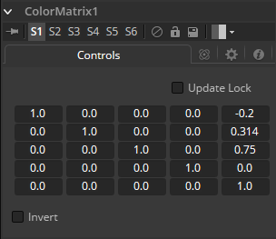
当然，我们也可以在各个通道之间来回复制颜色值。让Red通道包含基于三分之一的图像的亮度值，Green通道包含基于正确的黑白转换方法的亮度值，而在Blue通道中我们使用第三种基于获取更多来自Red而不是来自Blue信息的方法。我们还将Blue通道的亮度降低0.1，并将Alpha通道替换为原始Blue通道。
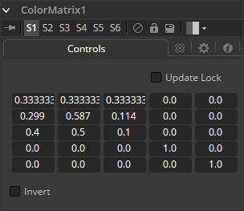
Color Space工具提供了以各种其他色彩空间格式处理图像的功能。默认情况下，Fusion使用RGB色彩空间，大多数工具和显示器将图像的主要通道解释为Red、Green和Blue。
从RGB更改色彩空间将导致大多数图像看起来很奇怪，因为Fusion的监视器仍将主要通道解释为Red、Green和Blue。例如，在其中一个监视器中查看转换为YUV的图像将显示Y通道为Red，U通道显示为Green，V通道显示为Blue。
Fusion接口的不少元素直接引用RGB通道。用于将工具的效果限制为单个色彩通道的四个复选框便是一个例子。将转换应用于图像时，这些元素的标签保留为R、G和B，但它们表示的值来自当前色彩空间。（对于RGB到HLS转换来说，Red是Hue，Green是Luminance，Blue是Saturation。色彩空间转换不会改变Alpha值。）
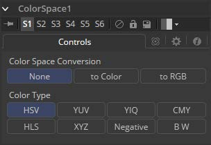
此按钮组有三个选项：
这些按钮用于选择选中To Color转换时应用的色彩空间转换：
HSV (Hue, Saturation and Value) HSV（色相、饱和度和明度）： HSV颜色空间中的每个像素根据其色相、饱和度和明度组件来描述。明度定义为我们区分浅色和暗色或亮度的质量。降低饱和度大致相当于将白色添加到调色板上的油漆芯片上。而增加其值大致类似于添加黑色。
YUV (Luma, Blue Chroma and Red Chroma) YUV（亮度、蓝色色度和红色色度）： YUV色彩空间用于PAL视频的模拟广播。由于大部分视频工程师对其熟悉，这种格式通常用于对图像进行色彩校正。每个像素根据其亮度，蓝色色度和红色色度分量进行描述。
YIQ (Luma, In Phase and Quadrature) YIQ（相位和正交）： YIQ色彩空间用于NTSC视频的模拟广播。这种格式比YUV更罕见，几乎从未见过。每个像素根据其亮度、色度（同相或红-青色通道）和正交（品红-绿）分量进行描述。
CMY (Cyan, Magenta and Yellow) CMY（青色、洋红色和黄色）： 虽然在印刷中更常见，但CMY格式通常存在于来自其他软件包的计算机图形中。每个像素根据其青色、洋红色和黄色成分进行描述。CMY是非线性的。
HLS (Hue, Luminance and Saturation) HLS（色相、亮度和饱和度）： HLS色彩空间中的每个像素根据其色相、亮度和饱和度分量进行描述。HLS和HSV颜色空间之间的差异很小。
XYZ (CIE Format) XYZ（CIE格式）： 此模式用于将CIE XYZ图像转换为RGB色彩空间和从RGB色彩空间转换。与其他可用色彩空间不同，CIE XYZ是加权空间，而不是非线性空间。在该上下文中的非线性意味着在颜色空间中的不同位置处的值的相等变化可能不一定在视觉上产生与眼睛相同的变化幅度。
简单地说，CIE颜色空间是感知颜色系统，具有从实验获得的加权值，其中要求受试者使用三个主要光源匹配现有光源。
此颜色空间最常用于执行图像显示格式之间的色域转换和色彩空间匹配，因为它包含整个色域的可感知色彩。
Negative 取反： 色彩通道被反转。色彩空间保持RGBA。
BW 黑白： 图像转换为黑白。每个通道对图像亮度的影响可通过选择此选项时出现的滑块控件进行调整。这些滑块的默认值表示每个通道对图像亮度的通常感知影响。图像的色彩空间保持RGBA。
CopyAux将辅助通道组复制到RGBA通道。CopyAux只在Fusion Studio中可用。
它主要是一种便捷性工具，因为花费更多精力来使用ChannelBoolean工具也可以完成复制。虽然CopyAux有很多选项，但大多数时候你只会调整要复制的通道而忽略其余的通道。
在Fusion 6.31之前，为了访问辅助通道，需要使用ChannelBoolean将它们复制到RGBA通道。通常这也会涉及ChangeDepth工具，来确保接收辅助通道的RGBA通道是float32。现在在Dimension中，CopyAux通过更少的鼠标点击实现了相同的结果，让您更快地工作。ChannelBooleans处理各个单独的通道，而CopyAux处理通道组。默认情况下，CopyAux工具会自动提升其输出深度以匹配辅助通道的深度。
CopyAux还支持静态归一化。静态归一化与Fusion监视器所做的动态归一化的优势在于颜色随着时间的推移保持不变。例如，如果您正在查看一个球的Z或WorldPos值，您将看到从白色到黑色的平滑渐变。现在想象一下其他3D对象在某个时间被引入背景中。动态归一化将使球几乎完全变白，而背景物体现在是新的黑色。动态归一化还会导致查看矢量/视差通道时的闪烁问题，这使得难以在视觉上在比较不同时间两个帧的辅助通道。
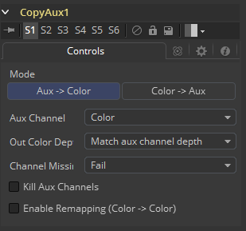
Mode确定辅助通道是否复制到RGBA色彩通道，反之亦然。使用此选项，您可以使用一个CopyAux将辅助通道变为色彩通道，对其执行一些合成操作，然后使用另一个CopyAux将颜色写回辅助通道。 当Mode设置为“Color> Aux”时，除AuxChannel外的所有输入都被隐藏。
根据当前模式，可以复制或写入辅助通道。当辅助通道abcd有一个有效组件时，它将被复制为aaa1，两个有效组件被复制为ab01，三个有效组件被复制为abc1，四个组件被复制为abcd。例如，Z通道将复制为zzz1，纹理坐标复制为uv01，法线将复制为nxnynz1。
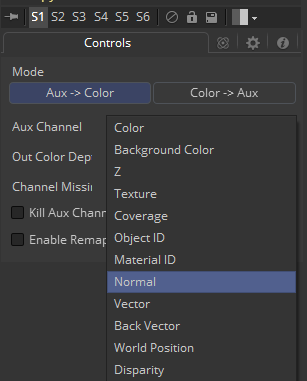
Out Color Depth控制输出图像的颜色深度。大多数辅助通道包含浮点值，或者如果它们是整数值，则它们可以包含超过255的值。将浮点值复制到int8或int16图像时，这可能会有问题，因为负值和超过1.0的值可能会被剪裁。此外，可能会丢失精度。此选项确定如果输入图像的RGBA通道深度不足以包含复制的辅助通道会发生什么。
将浮点通道复制为整数图像格式时要小心，因为如果没有正确设置CopyAux，它们可能会被剪裁。出于此工具的目的，除ObjectID/MaterialID被认为是int16外，其他所有辅助通道都被认为是float32。
Channel Missing确定如果通道不存在会发生什么。例如，如果您选择将Disparity复制到Color并且输入图像没有Disparity辅助通道，则将确定会发生什么。
选中此项后，CopyAux会将请求的通道复制到RGBA，然后输出纯RGBA的结果图像，消除其他所有通道。如果您想增加可以缓存以进行播放的CopyAux的帧数，例如播放长序列的差异，这将非常有用。一个方便的提示是，你可以使用“Kill Aux”功能，只需Copy Color > Color来进行更长时间色彩播放。
启用重新映射后，将重新调整当前选定的辅助通道，根据From和To滑块选择线性映射范围，如下所述。在转换操作之前应用重新映射选项。这意味着您可以设置From. Min/From. Max值为-1、1来将法线重新调整为[0,1]范围，或将它们设置为[-1000,0]，将Z值从[-1000,0]重新调整为[0,1]范围在剪裁发生之前。
请注意，重新映射选项是对于每个通道选项。这意味着法线的默认比例可以设置为[-1,+1]> [0,1]，对于Z，它可以设置为[-1000,0]>[0,1]。当您在法线和Z之间切换时，会同时记住两个选项。这可能有用的一种方法是您可以设置所有重新映射范围并将其保存为可以重复使用的设置。重新映射可用于将辅助通道压缩到静态[0,1]范围以供查看，或者，若如果您希望将法线压缩到[0,1]范围以便将它们存储在int8图像中。
这是与To. Min对应的辅助通道的值。
这是与To. Max对应的辅助通道的值。可以将最大值设置为小于最小值以实现值的翻转/反转。
这将扫描当前图像以检测最小/最大值，然后将From. Min/From. Max值控件设置为这些值。
这将扫描当前图像以检测最小/最大值，然后放大当前[From. Min, From. Max]区域，以便包含扫描的最小值/最大值。
这是最小输出值，默认为0。
这是最大输出值，默认为1。
将值重新调整为[To. Min, To. Max]的范围，这会反转/翻转范围。
Gamut工具将颜色从不同的色域转换为其他色域，并移除或添加适当的伽玛来完全线性化输入图像。
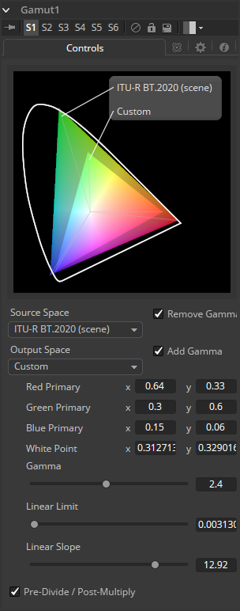
Source Space确定图像的输入颜色空间。如果您只想使用Output Space控件添加Gamma，请将其保留为“No Change”。
DCI-P3： DCI-P3色彩空间最常用于DLP投影仪，通常作为2K DLP投影仪可用的色彩空间提供，并作为10位LCD显示器（如HP Dreamcolor）的仿真模式提供。该色彩空间在SMPTE-431-2标准中定义。
Custom 自定义： 自定义色域允许您根据CIE 1931原色和白点描述颜色空间，这些颜色空间表示为XY坐标，以及伽马，极限和斜率。 例如，如果使用Custom色彩空间来描述的话，则上面提到的DCI-P3色域将具有以下值：
| 变量 | x | y |
|---|---|---|
| Red Primary | 0.68 | 0.32 |
| Green Primary | 0.265 | 0.69 |
| Blue Primary | 0.15 | 0.06 |
| White Point | 0.314 | 0.351 |
| Gamma | 2.6 | – |
| Linear Limit | 0.0313 | – |
要了解这些控件的工作原理，您可以在波形（Waveform）模式下查看附加到渐变背景的工具，并观察不同的调整如何修改输出。
输出空间是转换后的色域到所需的色彩空间。如果您想使用Source Space控件删除Gamma，请将此保留为No Change。
选中这些复选框可以在线性或非线性伽玛中进行色域转换，或者只是删除或添加适当的伽玛值而不更改色彩空间。
选择Pre-Divide/Post-Multiply复选框将使图像像素值除以颜色校正之前的alpha值，然后在校正后重新乘以alpha值。这有助于防止创建非法加性图像，特别是蓝/绿键的边缘或在使用3D渲染对象时。
Hue Curves工具允许您使用一系列样条曲线调整图像中的色彩。提供样条来控制图像色相（Hue）、饱和度（Saturation）和亮度（Luminance）以及每个单独的色彩通道。另外一组曲线允许您将抑制应用于各个色彩通道。
Hue Curves工具优于Fusion中其他色彩校正工具的优点是可以通过操纵样条曲线来将工具效果限制在图像的非常窄的部分，或者扩展为包括图像的宽范围部分。此外，可以对这些曲线进行动画处理，以跟踪图像随时间的变化。由于样条曲线的主轴由图像的色相定义，因此更容易将特定颜色与图像隔离以进行调整。
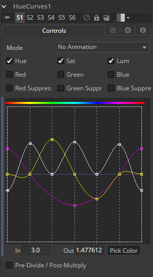
Mode选项可以在Animate和Dissolve模式之间切换。默认模式为Static，其中曲线的调整会随着时间的推移而一致地应用。将Mode设置为Animate或Dissolve来允许颜色曲线随时间变化。
Dissolve式基本上是过时的，仅出于兼容性原因而包含在内。
这些复选框定义哪些样条线可编辑并包含在Pick Color过程中。
可以同时编辑任意数量的激活样条曲线，但在大多数情况下，只有当前修改的样条曲线处于活动状态以避免对其他样条曲线进行不必要的更改会更方便。
使用Pick Color按钮时，将在所有活动样条线上创建一个点，表示所选色彩。
此查找表（LUT）控件是Hue Curves工具的主要界面元素，该工具存放了各种样条线。在外观上，该工具与Color Curves工具非常相似，但在本情景下，水平轴表示图像的色相，而垂直轴表示调整的程度。Spline Window显示各个通道的曲线。它基本上是一个微型的Spline Editor。
实际上，也可以在样条曲线编辑器中找到并编辑此窗口中显示的曲线。所有组件的样条曲线最初都是平的，关键点水平放置在每种原色上。从左到右分别是：Red、Yellow、Green、Cyan、Blue和Magenta。由于色调梯度的周期性，每条曲线中最左边的关键点会连接到曲线的最右边的关键点。
右键单击LUT控件将显示一个上下文菜单，其中包含用于重置曲线、导入外部曲线、调整所选关键点的平滑度等的选项。有关样条控件一般如何工作的详细信息，请参阅本手册的工具控件（Tool Controls）一章。
使用In和Out控件可以处理所选点的精确值。要更改值，请选择一个点并输入所需的in/out值。
从Pick Color按钮左键单击并拖动将将当前鼠标光标更改为吸管。在按住鼠标左键的同时，将光标拖动到监视器以从显示的图像中选择一个像素。这将导致锁定在水平轴上的关键点出现在当前活动的曲线上。关键点将表示所选颜色在曲线上的位置。使用上下文菜单的“锁定所选点”（Lock Selected Points）切换以解锁点并恢复水平移动选项。
点仅添加到启用的样条线。要仅在特定通道上添加点，请在进行选择之前禁用其他通道。
选择Pre-Divide/Post-Multiply复选框将使图像像素值除以颜色校正之前的alpha值，然后在校正后重新乘以alpha值。这有助于防止创建非法加性图像，特别是蓝/绿键的边缘或在使用3D渲染对象时。
Fusion支持Sony Imageworks指定的Open Color IO工作流程。通常，色彩管道由一组由OCIO特定的配置文件定义的颜色转换组成，通常以“.ocio”扩展名命名，它允许用户轻松共享设施内或设施之间的颜色设置。要使用的配置文件的路径通常由用户创建的名为“OCIO”的环境变量指定，尽管有些工具允许覆盖它。如果找不到其他* .ocio配置文件，将使用Fusion的LUTs目录中的DefaultConfig.ocio文件。
有关格式内部的深入文档，请参阅opencolorio.org上的官方页面。
OCIO CDLTransform允许用户创建、保存、加载和应用CDL文件。
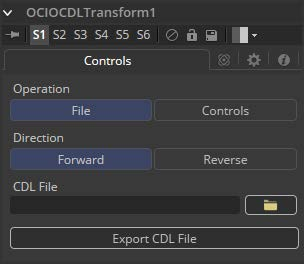 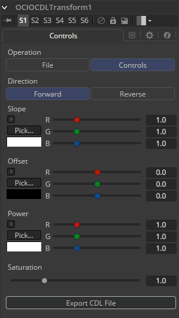
在文件和控件之间切换。 在文件模式下，可以加载标准ASC-CDL文件。在控制模式下，可以对坡度（Slope），偏移（Offset），强度（Power）和饱和度（Saturation）进行手动调整，并可以保存CDL文件。
在Forward和Reverse之间切换。Forward应用工具中指定的更正，而reverse尝试删除这些更正。请记住，并非所有色彩校正都可以撤消。
想象一下，所有坡度值都设置为0.0，从而产生完全黑色的图像。无论是数学上还是视觉上都不可能反转该操作。
相乘到颜色值。这与BrightnessContrast工具中的Gain相同。
相加到颜色值。这与BrightnessContrast工具中的Brightness相同。
应用Gamma曲线。这是BrightnessContrast工具的Gamma功能的反转。
增强或降低色彩饱和度。这与BrightnessContrast工具中的Saturation相同。
允许用户将设置导出为CDL文件。
Fusion支持Sony Imageworks指定的Open Color IO工作流程。
通常，色彩管道由一组由OCIO特定的配置文件定义的颜色转换组成，通常以“.ocio”扩展名命名，它允许用户轻松共享设施内或设施之间的颜色设置。要使用的配置文件的路径通常由用户创建的名为“OCIO”的环境变量指定，尽管有些工具允许覆盖它。
如果找不到其他* .ocio配置文件，将使用Fusion的LUTs目录中的DefaultConfig.ocio文件。有关格式内部的深入文档，请参阅opencolorio.org上的官方页面。OCIOColorSpace允许基于OCIO配置文件进行复杂的色彩空间转换。示例配置可以从 opencolorio.org/downloads.html 获得。
OCIOColorSpace工具的功能也可作为ViewLUT菜单中的ViewLUT工具使用。
显示一个File > Open对话框以加载所需的配置文件。
根据Config文件，此处将列出可用的源色彩空间。
此列表的内容仅基于加载的配置文件，因此可能会有很大差异。
根据Config文件，此处将列出可用的输出色彩空间。
此列表的内容仅基于加载的配置文件，因此可能会有很大差异。
Fusion支持Sony Imageworks指定的Open Color IO工作流程。
通常，色彩管道由一组由OCIO特定的配置文件定义的颜色转换组成，通常以“.ocio”扩展名命名，它允许用户轻松共享设施内或设施之间的颜色设置。要使用的配置文件的路径通常由用户创建的名为“OCIO”的环境变量指定，尽管有些工具允许覆盖它。
如果找不到其他* .ocio配置文件，将使用Fusion的LUTs目录中的DefaultConfig.ocio文件。有关格式内部的深入文档，请参阅opencolorio.org上的官方页面。OCIOFileTransform允许用户加载和应用各种查找表。
OCIOFileTransform工具的功能也可作为ViewLUT菜单中的ViewLUT工具使用。
显示一个File > Open对话框以加载所需的LUT。
在前进和后退之间切换。Forward应用工具中指定的更正，而reverse尝试删除这些更正。请记住，并非所有颜色校正都可以撤消。想象一下，所有斜率值都设置为0.0，从而产生完全黑色的图像。无论是数学上还是视觉上都不可能反转该操作。
允许用户选择颜色插值以获得最佳质量/渲染时间比率。
设置画布颜色用于设置工作区的颜色——超出图像（DoD）中定义像素的所有区域。这个区域通常延伸到无限远。默认情况下，使用的画布颜色为黑色/无Alpha（透明）。
某些工具可能会更改图像的画布颜色，例如，反转遮罩会将遮罩的画布从黑色更改为白色。Set Canvas Color允许您控制和覆盖它。
使用这些控件调整图像画布的颜色和Alpha值。默认为零Alpha的黑色。
White Balance工具可用于自动消除由于相机设置错误，相机CCD出现问题或光线条件不佳而导致的图像偏色。可以通过选择色温，或者从原始图像中选择渲染要校正的色偏的中性色来进行校正。
非常重要 使用Custom方法选择中性色时，请确保从源图像中进行拾取，而不是使用White Balance工具的结果。这样可以确保在拾取时图像不会发生变化，并且White Balance工具可以准确获得需要校正的原始颜色。
使用此菜单选择源图像的色彩空间（如果已知）。这可以使校正更准确，因为该工具将能够将色彩空间的自然伽玛考虑作为校正的一部分。如果图像使用的色彩空间未知，请将此菜单保留为默认值。
白平衡工具可以使用两种方法之一操作，即Custom方法和色彩Temperature方法。
Custom 自定义： Custom方法需要从场景中选择应该是纯灰色的像素。
该工具使用此信息计算转换像素所需的色彩校正，使其实际为灰色。当校正应用于整个图像时，它通常会对整个镜头进行白平衡。
Temperature 温度： 色彩Temperature方法要求指定镜头的实际色温。
此复选框将Black、Mid和White点锁定在一起，以便整个图像受到同等影响。取消选中控件将分别为白色平衡每个范围提供单独的控件。此控件同等地影响两种方法。
仅在选择Custom方法时才会显示这些控件。它们用于从源图像中的像素中选择颜色。White Balance工具将对图像进行色彩校正，以便将所选颜色转换为下面结果颜色选择器中设置的颜色。一般来说，这是灰色的。应该选择应该是纯灰色但由于某种原因而不是真正灰色的颜色。
如果取消选中Lock Black/Mid/White复选框，则可以为每个颜色范围选择不同的参考。
例如，尝试为未在任何色彩通道中剪切的黑白参考选择像素。在高端，一个例子是浅粉红色的像素，值为
255,240,240
。即使颜色不是白色，像素也会在红色中饱和/剪裁。同样，一个非常深的蓝灰色的像素可能是
0,2,10
。即使它不是黑色，也会被剪裁成红色。
这两个示例都不是一个作为参考像素很好的选择，因为White Balance工具没有足够的余量。
仅在选择Custom方法时才会显示这些控件。它们用于选择工具平衡参考颜色的颜色。这通常默认为纯中灰色。
如果取消选中Lock Black/Mid/White复选框，则可以为每个颜色范围选择不同的结果。
使用此控件设置源图像的色温。如果取消选中Lock Black/Mid/White复选框，则可以为每个色彩范围选择不同的参考。
使用此控件设置图像的目标色温。如果取消选中Lock Black/Mid/White复选框，则可以为每个颜色范围选择不同的结果。
此复选框选择在应用校正时工具是否将图像的灰度系数考虑在内，使用选项卡顶部菜单中所选颜色空间的默认灰度系数。
使用Ranges选项卡中的控件可以自定义图像中被视为阴影、中间调和高光的像素范围。Color Corrector工具文档中详细记录了此选项卡中控件的使用。